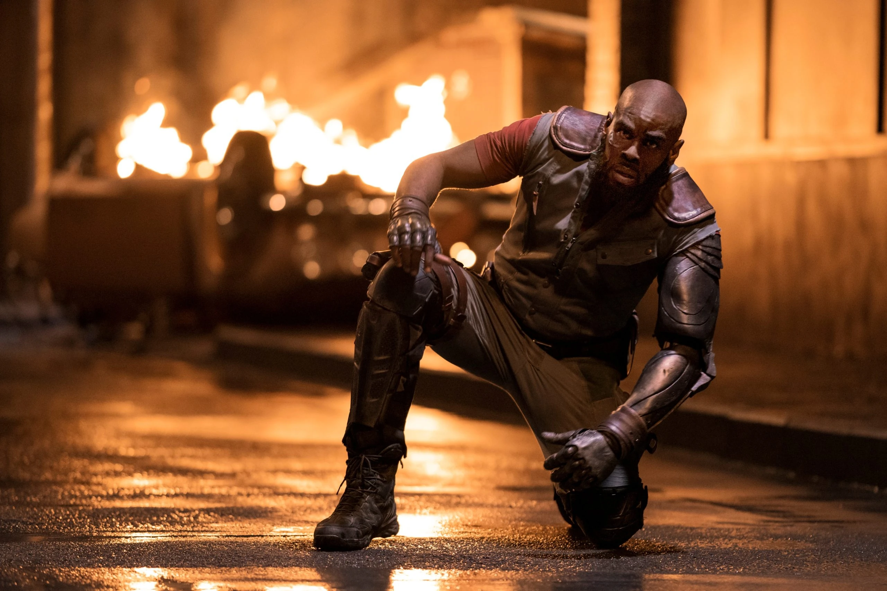
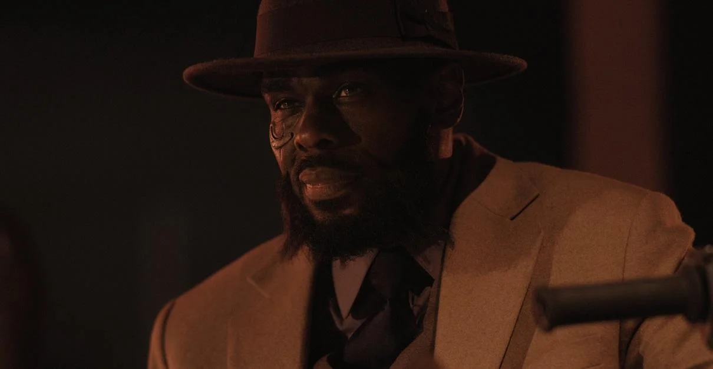

Jet Black

Interpretado por Mustafa Shakir
Jet Black es un ex-policía que se convierte en un cazador de recompensas después de dejar su trabajo en la fuerza policial. Es el capitán de la nave espacial Bebop y uno de los principales miembros del equipo de cazarrecompensas. A lo largo de la serie, actúa como una figura paterna y líder para los otros miembros de la tripulación.
Es un hombre tranquilo y reflexivo con un fuerte sentido del deber. Como ex-policía, a menudo muestra una ética sólida y un deseo de hacer lo correcto. A pesar de su apariencia ruda, Jet tiene un corazón compasivo y se preocupa profundamente por sus compañeros de equipo, incluso cuando a veces parece distante.
Es hábil en el combate y tiene un gran conocimiento técnico, especialmente en el mantenimiento de la nave Bebop. Su brazo izquierdo es una prótesis cibernética, lo que le otorga fuerza adicional. Además de sus habilidades físicas, Jet es un detective astuto y experimentado.
 